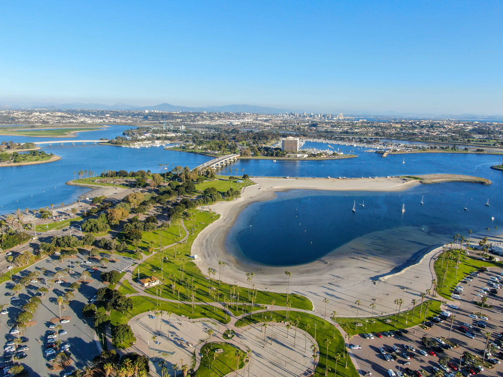
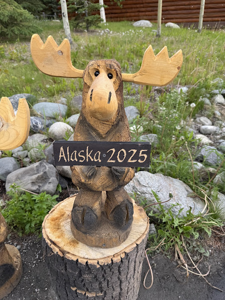
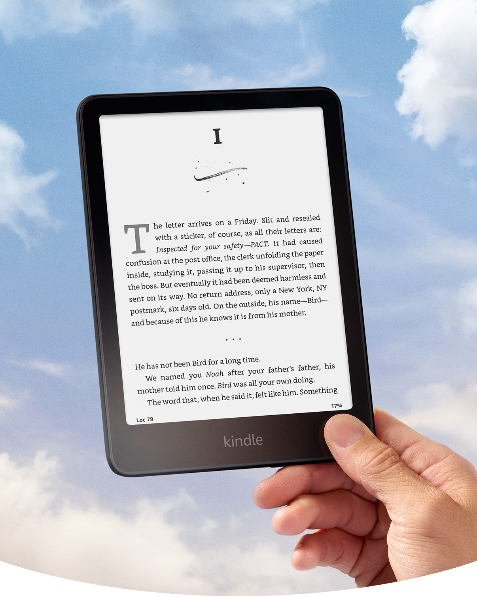

 My favorite place in San Diego is Mission Bay Beach. My family and I like to sit on the small hills in the bright sun and have a picnic while watching the backwaters. My sister always brings her bicycle to ride around, and sometimes I roller skate beside her. On some nights, we can see fireworks from SeaWorld since it's close by.
 My favorite place I've visited for vacation is Alaska, which I went to this past summer. Some of the cities I visited were Anchorage, Denali, Healy, Whittier, Seward, and more. I rode a train for a scenic ride, went on two cruises, and even got to do a helicopter ride over the Knik River and Glacier. From the train, we saw beautiful nature all around us, and on the cruise, we spotted humpback whales, puffins, sea lions, otters, and seals. I also got to see different kinds of glaciers, like tidewater glaciers, valley glaciers, and hanging glaciers. After the helicopter ride, I even got to walk on a glacier and drink its water. It was an unforgettable experience.
 I like to read books in my free time. I prefer physical books over digital ones, but since they take up a lot of space, I've been reading more e-books lately. Because of school, I haven't had much time to read, but I wish I could read a little every day since I find it relaxing, and it relieves stress. I also love watching TV shows with my mom, like Gilmore Girls, Friends, Lost in Space, and different baking shows. Spending time reading or watching shows helps me unwind and relax.